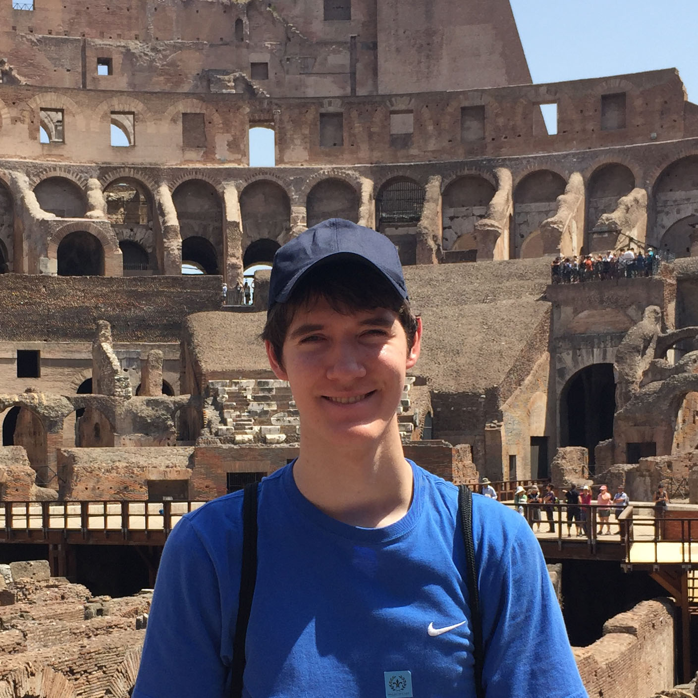

<div class="container-fluid">
  <div class="row">
    <div class="col-md-3 text-center img-wrapper">
      
    </div>
    <div class="col-md-9">
      <p>
        Hi! I'm Ben. I currently study computer science as a member of the
        Turing Scholars Honors Program at the University of Texas at Austin. I'm
        interested in algorithms and machine learning. Recently, I've gotten
        into more applied areas of CS, such as game design. In my free time, I
        enjoy reading, competitive programming, and being a strategy game
        connoisseur.
      </p>
      <p>
        I previously held an internship at
        <a href="https://parasol.tamu.edu">Parasol Laboratory</a>, where I
        worked with robotic motion planning as it applies to computational
        biology. This experience exposed me to research in academia and
        introduced me to neural networks, piquing my interest in machine
        learning. You can read more about this project
        <a href="https://parasol.tamu.edu/people/bporter">here</a>.
      </p>
      <p>
        If you're interested in my projects or want to reach out to me, feel
        free to send me an <a href="{{ site.email }}">email</a> or to take a
        look at my <a href="resume/resume.pdf">resume</a>.
      </p>
    </div>
  </div>
</div>
